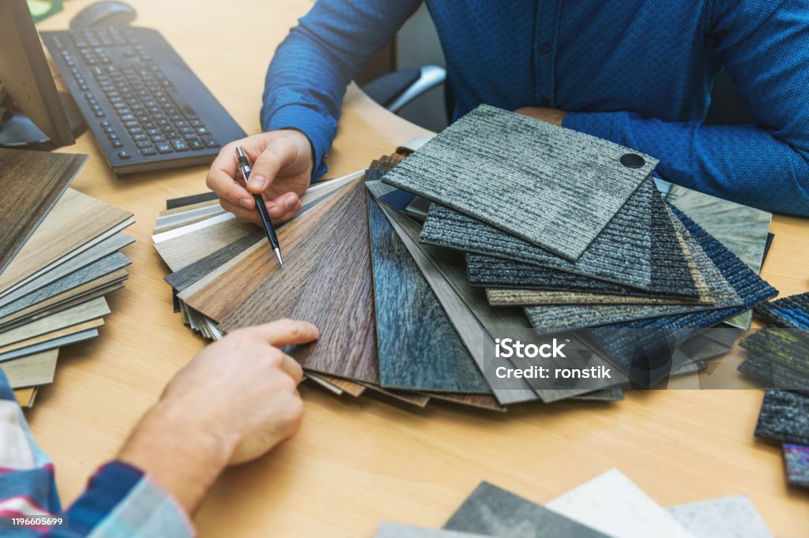
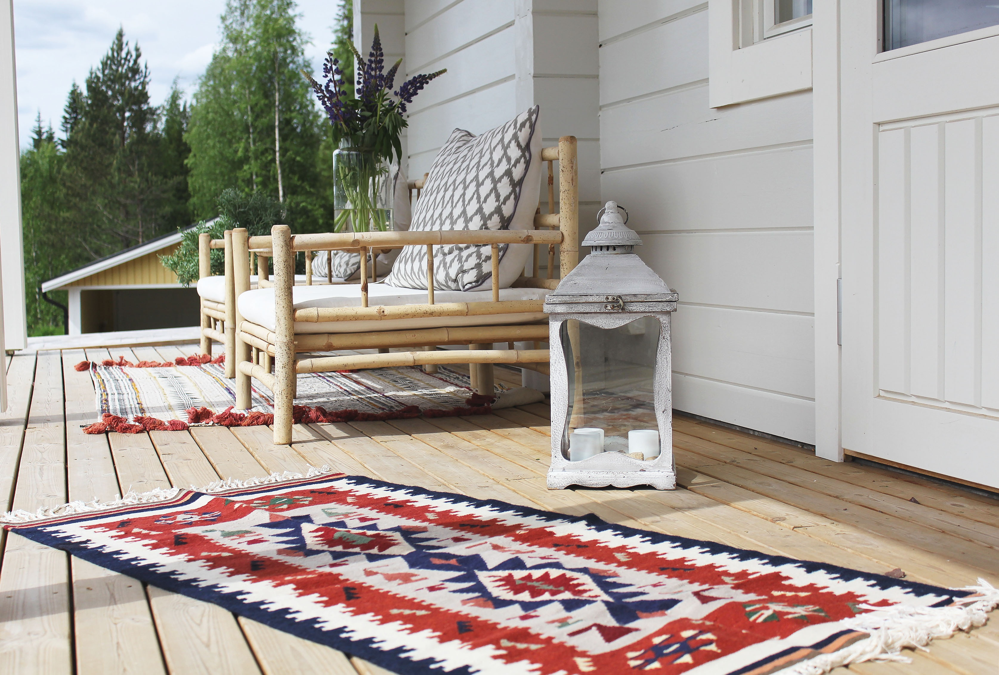
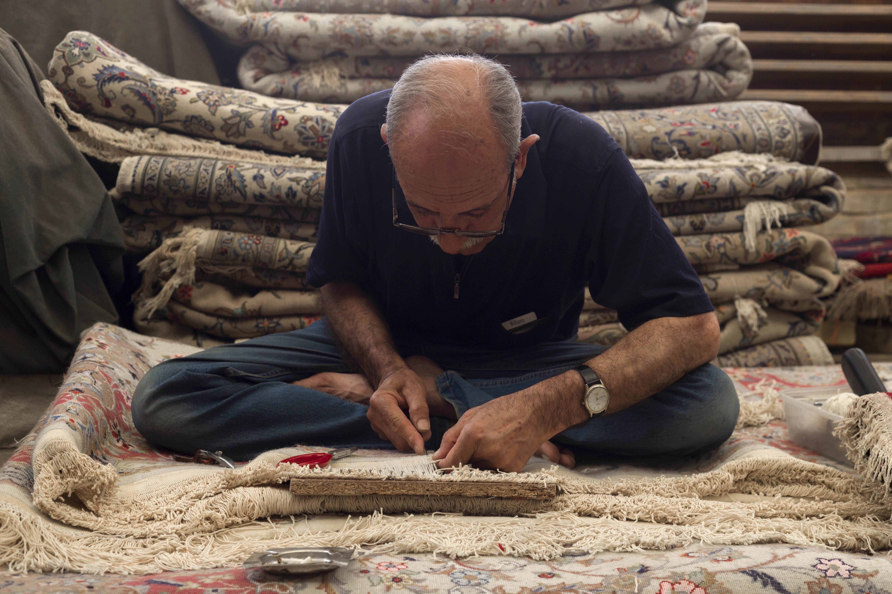

Tietoa meistä
Historia
DJN Rugs perustettiin vuonna 2026, Otavankadun Esedun toimipisteellä, tieto- ja viestintätekniikan luokassa.

Toimiala
Yrityksemme toimiala on tekstiilien vähittäiskauppa.

Henkilöstö
Yrityksemme päähenkilöitä ovat
- Yhtiömies Daniel Hytönen
- Yhtiömies Niilo Eskelinen
- Markkinointipäällikkö Markku Markkinointi
- Myymäläpäällikkö Mari Mattonen
Yrityksen toimitavat
Jokainen DJN Rugs matto edustaa tinkimätöntä laatua, huolellisesti viimeisteltyä käsityötä ja ajattoman tyylikästä designia ja mattoja, jotka on tehty kestämään ja näyttämään upeilta vuodesta toiseen.

Palvelut
Myymme laadukkaita ja eettisesti tuotettuja mattoja jokaiseen hintaluokkaan.
Palveluihimme kuuluu mattojen myynti, kokolattiamattojen asennus sekä mittatilaustyöt.
